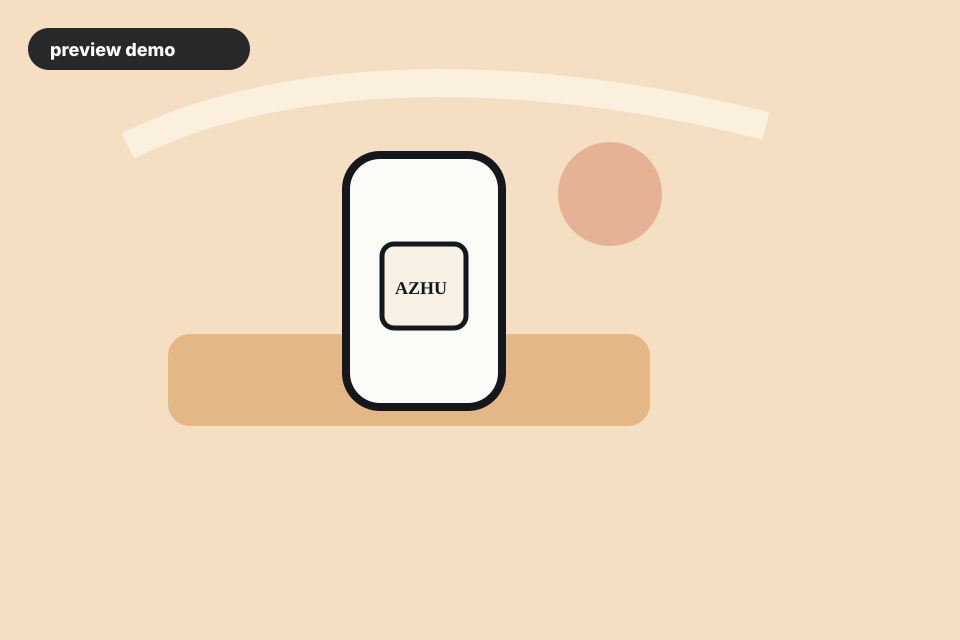

gpt-image-2 1536x1024
Premium Product Hero 高端产品主视觉
Strong first demo category because product shots are easy to compare and share. 适合作为首个演示类别，产品图容易对比，也方便传播。
Create a premium e-commerce hero image for a matte white skincare serum bottle on translucent amber acrylic blocks. Use a warm cream background, soft diagonal morning light, subtle condensation on the bottle, realistic glass reflections, and enough negative space on the right for headline text. Keep the label minimal with the readable text 'AZHU LABS'. Photorealistic studio product photography, 85mm lens feel, high-end direct-to-consumer brand.